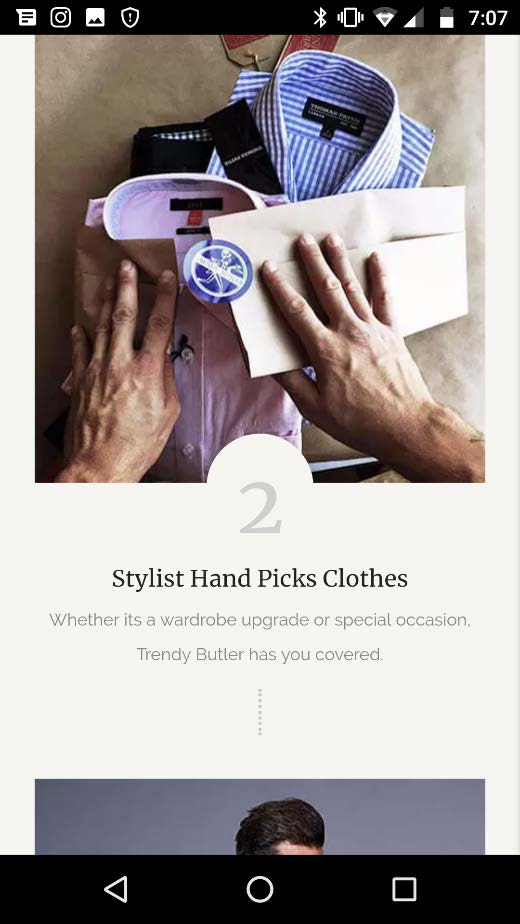

D E S I G N P R I N C I P L E S
PARC: Proximity
- Dollar Shave Club
- Website: Dollar Shave Club
- I thought that the way they used the spacing where it has the three icons (free shipping and etc.) in
comparison to the space they put their next item of business is really good! As an amateur designer with
not a lot of experience, I struggle dabbling with space. This website example makes it flow by
maintaining even white space without compromising design.
PARC: Alignment
- Trendy Butler
- Website: Trendy Butler
- 
- I wish I could screenshot a whole scroll of a mobile website. Scrolling through the website is seamless
even though it’s all in the center— which usually, putting everything in the center is a no-no for most
designers. Even though it is, the alignment of image and text blends.
PARC: Contrast
- Freshly
- Website: Freshly
- Some people usually use pictures that are TOO VIBRANT against the text or graphics they are using. In
this example, you know that there’s an image behind it, but do you notice the strike of the image first,
or the graphic? This example does a good job on balancing both without overpowering one another. It’s a
good blend.